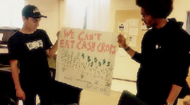
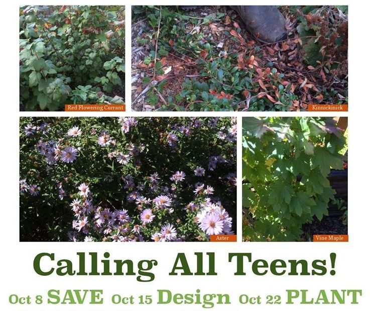
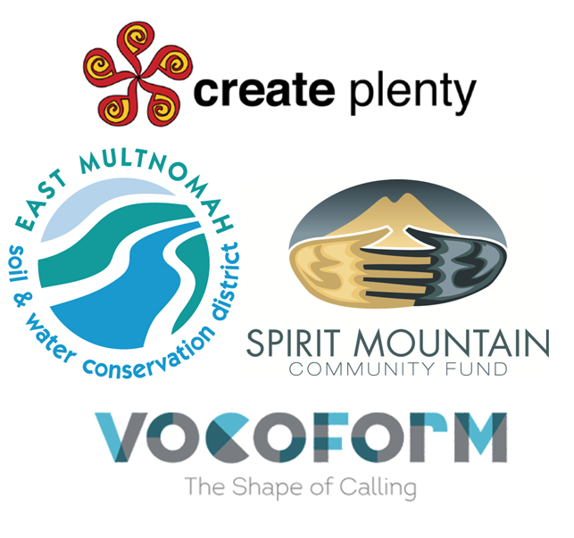

Students in Portland stood alongside parents, teachers and community leaders to call for the teaching of Climate Justice in our classrooms. As a result,the Portland Public School Board passed the Climate Justice Resolution - the first such resolution in the nation!

Take Action!
We're forming Climate Action Teams in each high school. Receive support for the individual project of your choice and get connected to paid summer work to put your newfound skills to use.

Get Credit!
Check out the great projects below. You can get elective school credit for the important work you will do. Scroll down to to explore all these great opportunities.

Connect!
We're bringing together students from all over Portland. You'll meet regularly with students from other high schools and learn how to organize a cohesive action team.

Over a three week period teens from around Portland will help build an urban native plant garden and outdoor gathering space. Help save native plants that are rooted on land soon to be developed for housing. Locations in N/NE Portland.
Please r.s.v.p. to Cheryl@createplenty.org
Parents are welcome too!
Save the Native Plants
Sat, Oct 8, 1-5 PM
Design a Garden
Sat, Oct 15, 1-5 PM
Plant a Garden
Sat, Oct 22, 1-5 PM
SPONSORED BY

On the docket for this year: How can youth help with the climate justice resolution recently adopted by the Portland Public School district? How can youth creatively encourage school traditions to reflect 21st century challenges and promote awareness and action on the environment? How can youth show up together publicly and testify on behalf of their future? How can this be fun, engaging and building community?
Portland is a wonderful profusion of non-profit organizations doing great work -- and it all relates to climate justice! You are one person learning about who you are and where you might fit into the big picture.
HELP Portland consists of high school leaders (of all types) who will share goals, successes and challenges, find ways to support each other and work together to invite more participants to take part in creating a functional network of students creating and coming into their visions.
Students will come up with a regular meeting schedule and events to build community with one another. If you are interested,
please fill out this form and we will get back to you soon on next steps.